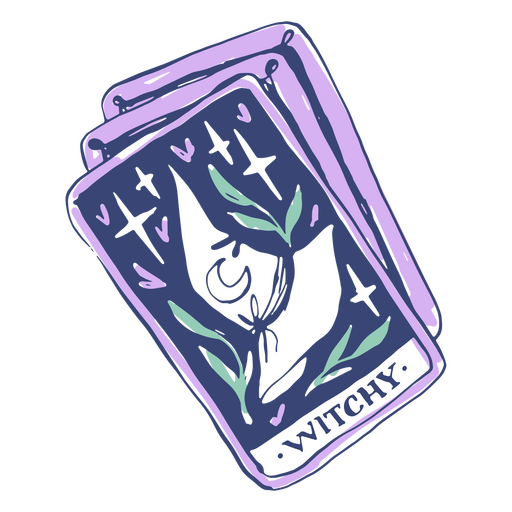

Tarot

Tarot is a system of divination and spiritual guidance that has fascinated people of diverse cultures for centuries. cultures for centuries. This practice is based on the use of special cards known as tarot cards, which are loaded with symbolism and meaning. tarot cards, which are loaded with symbolism and meaning.
Each tarot deck is composed of 78 cards, divided into two main groups: Major Arcana and the Minor Arcana.
The Major Arcana represent powerful and meaningful archetypes that reflect fundamental situations in human life. fundamental situations of human life.
The Minor Arcana, on the other hand, detail more everyday aspects and represent and represent situations and people in the querent's environment.
Tarot is used as a tool for self-knowledge, reflection and prediction.
★ Are you ready for magic? ★